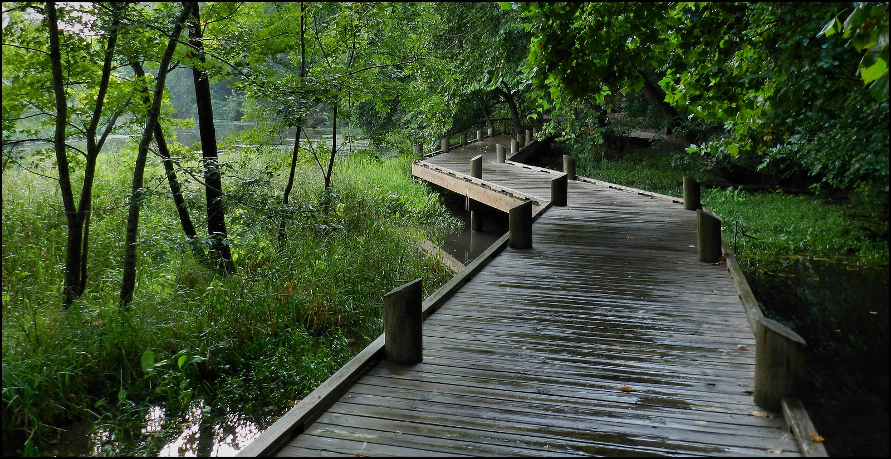
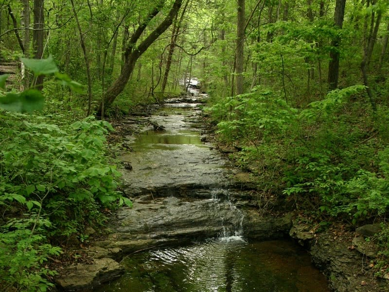

Today’s Agenda
Section 2: Historical Perspectives on Wilderness
- Edenic Narratives: Wilderness as the Absence of God
Justin Leinaweaver (Fall 2025)
The Springfield Conservation Nature Center
A Spectrum of Environments (Nash 2014)

On a scale of 0 (purely civilized) to 10 (purely wild), where would you rate the Springfield Conservation Nature Center?
Argument: The Springfield Conservation Nature Center is a zero (purely civilized)
Argument: The Springfield Conservation Nature Center is a 10 (purely wild)
Paper 1: The Importance of Wilderness
Make an argument that the wilderness is important to our community
- Due next Friday (Sep 5th)
Section 2: Historical Perspectives on Wilderness
Edenic Narratives
Sublime Narratives
Utility Narratives
Holistic Narratives
Wernick (1965)
Therefore, we should take full advantage of the resources available in the wilderness
- tl;dr we should spoil the wilderness!
Wernick (1965)
Wilderness represents an oppressive darkness constantly assaulting us and breeding war and oppression
Wilderness “propagandists” are bored snobs who fight to preserve a mild version of wilderness, only seek to defend cuddly megafauna and seek to protect a “balance of nature” that has never existed
Wilderness preservation is just one legitimate use of our resources no better than building roads, mining or erecting cities
Wilderness preservation is a minority viewpoint
Therefore, we should take full advantage of the resources available in the wilderness
Wernick (1965)
Wilderness represents an oppressive darkness constantly assaulting us and breeding war and oppression
Wilderness “propagandists” are bored snobs who fight to preserve a mild version of wilderness, only seek to defend cuddly megafauna and seek to protect a “balance of nature” that has never existedWilderness preservation is just one legitimate use of our resources no better than building roads, mining or erecting cities
Wilderness preservation is a minority viewpoint
Therefore, we should take full advantage of the resources available in the wilderness
An Edenic Perspective on the Nature Center
White (1967)
Therefore, the source of our current ecological crisis is the orthodox Christian arrogance towards nature
White (1967)
The roots of our “technological and scientific movements” began in the Middle Ages as Christianity came to displace paganism
A Christian ethos spread the idea that God had created the world to serve man’s purposes
By removing beliefs rooted in pagan animism (spirits in the natural world), Christianity made it possible to exploit nature in a mood of indifference to the feelings of natural objects
Writings by scientists during this period make clear that their viewpoints were clearly “cast in a matrix of Christian theology”
Therefore, the source of our current ecological crisis is the orthodox Christian arrogance towards nature
For Next Class
Edenic Narratives
Arguments for Consumers: Find a product or service
Arguments for Citizens: Find an argument or call to action